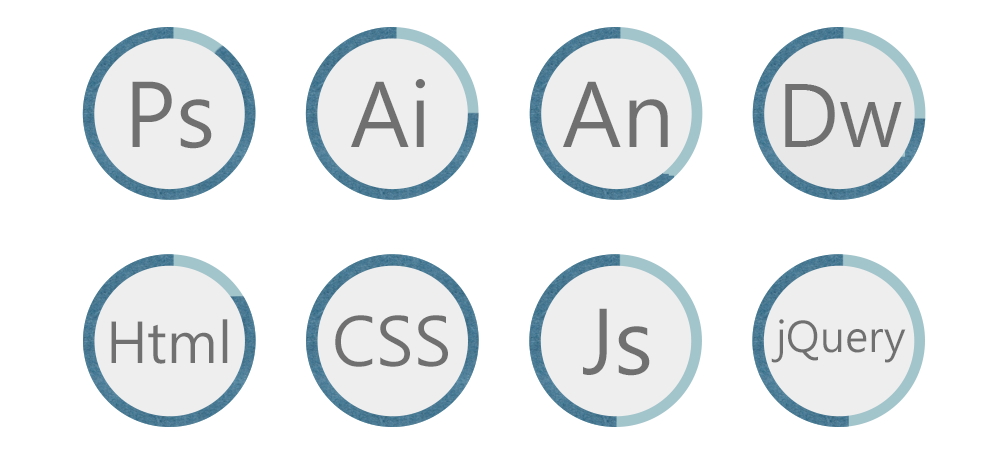
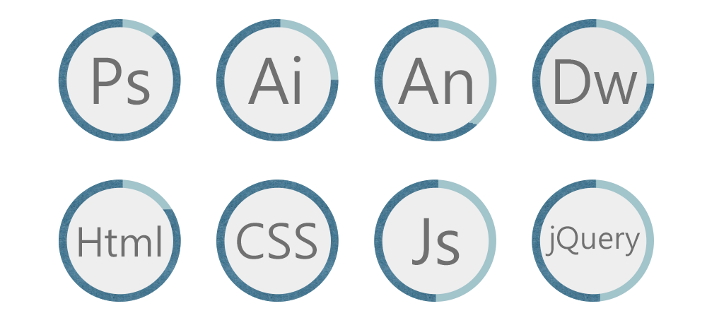

莊靜嘉
1992/10/09
qq40124@gmail.com
09777-55083
 

[ 技能使用 ]
通常習慣使用 Ps 進行主視覺效果、人物修圖、以及簡易 gif 動態畫面的製作，必要時加入由 Ai 創作的向量圖畫；較複雜且細膩的動畫則使用 An 製作，也可在動畫裡加入簡單的使用者互動效果（例如點擊）。
網頁部分則是先由上述工具製作完成後，再使用 Html、CSS 進行切版、刻板，需要加入額外的動態動作，簡易的動畫則使用CSS完成，較為複雜的事件處理則是使用 JS 以及 jQuery 去撰寫。
謝謝您願意看完我的作品集，我畢業於國立屏東大學資管系，大四下學期提前進入職場實習，擔任耐德科技公司 (Shopping99) 設計師助理，進公司半年幫忙公司 APP UI 設計，進一步提升更好的使用者體驗技能和開發組的溝通。
中期開始設計商品、SPA、海外的 Banner、粉絲團活動設計，與企劃和 PM 合作完成商品上架，後續陸續製作前導頁的大活動設計、公司吉祥物設計；平面設計為海外商品內、外包裝。後期優化手機板網頁，修改 YAML 響應式的網頁框架；主管派任當專案辦公室的設計師，並參與商品開發及企劃文案的撰寫，累積了不少可以讓商品賣更好的構想！
進入成果行銷後，先是為公司官網做了新的靜態網站，初期了解到 Google 廣告投放形式及參與了各式Google 的活動並開始設計 GDN 的廣告 (醫美星采、韓國知名彩妝 Banila co、亞太電信、安素等等)，也撰寫了金牌特務的小遊戲；後期更加入了 H5 動畫製作 (亞尼克、死侍、浪琴錶、澳航等等)，並使用 JS 及jQuery 嘗試撰寫各種新的廣告格式以及麥當勞、Ikea DDC（動態資料素材） 製作，從中讓我瞭解不少以前從未接觸過的。
希望貴公司看完個人履歷後，能給予一個機會讓我發揮我的專長為公司朝更優良的目標前進，謝謝貴公司耐心觀看我的作品以及履歷，謝謝!